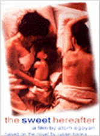

Contents | Features | Reviews | News | Archives | Store |
 |
|
| Movie Credits | Buy It! |
The Sweet Hereafter
Review by Eddie Cockrell
Posted 25 December 1997
|  | Directed by Atom Egoyan Starring
Ian Holm, Sarah Polley, Bruce Greenwood, Screenplay by Atom Egoyan, |
The Sweet Hereafter is the kind of movie you hold your breath through, probably without even knowing it. A fragile calibration of subjects not usually found in commercial cinema – death, grief, blame, and the hideously cheapened concept of emotional closure chief amongst them – the film nevertheless offers inspiration and hope in the form of a dogged emotional durability that achieves a certain grace in the midst of despair. Like Breaking the Waves before it, this movie-going experience is an elliptical, often arduous journey to a familiar yet utterly alien place that leads to a deeper understanding of not only the characters in the drama, but fundamental principles of life itself. How many movies can offer something like this – or even want to?
Slick but pensive lawyer Mitchell Stephens (Ian Holm) has traveled to the remote, frozen village of Sam Dent, British Columbia on a sad but potentially lucrative mission. For no apparent reason, a school bus has crashed into a frozen lake, abruptly snuffing out the lives of fourteen children and injuring others. Intending to stitch a coalition of grieving townspeople together to mount a class-action lawsuit ("I need sensitive, loving parents with no criminal background," he explains), he travels from family to family conducting interviews that strike an odd balance between crass background check and awkward therapy session, with some lawyerly cheerleading thrown in for motivation ("There's no such thing as an accident," he tells one grieving couple in perhaps the film's most multi-layered, pivotal scene. "I want to give your anger a voice.").
As he gathers information, he struggles with his own demons, as estranged daughter Zoe (Caerthan Banks, daughter of source novelist Russell Banks) calls him regularly on his cell phone to demand money – presumably to feed a monstrous drub habit that has haunted her for years. In one strand of the film's complex, time-shifting structure, Holm relates her torturous downward spiral and his own attempts at intervention to Zoe's childhood friend Alison (Stephanie Morgenstern) as the two share an airline flight.
In time, he meets those people in Sam Dent whose lives have been most severely affected by the crash. There's veteran bus driver Dolores Driscoll (Egoyan regular Gabrielle Rose), the dependable, solid soul who cares for her husband Abbott (David Hemblen, another member of Egoyan's unofficial stock company), the victim of a stroke, and keeps photos of her charges on the wall of her living room; grief-stricken parents Otto (Earl Pastko) and Wanda (Arsinée Khanjian, director Atom Egoyan's wife and frequent collaborator); Wendell and Risa Walker (busy character actor Maury Chaykin and Spanking the Monkey star Alberta Watson), owners of the Bide-a-Wile motel and parents of an emotionally challenged boy killed in the crash; and Billy Ansell (Bruce Greenwood, star of Egoyan's previous film Exotica), a strong but mournful widower whose two children also perished. His search for the perfect litigants leads him to The Burnells, Sam (Tom McCamus, I Love a Man in Uniform) and Mary (Brooke Johnson), whose daughter Nicole (Sarah Polley, Exotica, "The Road to Avonlea"), a promising singer, survived the accident but is now confined to a wheelchair.
The closer he gets to the pivotal legal action, the more he – or, more precisely, the vague but passionate promise of retribution his professional energies seem to offer – disturbs the fragile surface of the town and the covertly intertwined lives of it's people. It falls to Sarah, in a brave, impulsive act, to derail the lawsuit and begin her own – and the community’s – slow process of healing.
Without violating the carefully crafted environment of the novel (told in the first person, with a selection of characters narrating each chapter), Egoyan (Exotica, The Adjuster) has subtly enhanced the story to embrace a broad range of symbols and references.
"I'd never read any of Russell Banks' books before," the director explained, "It was a revelation, there's this beautiful balance between the mundane and the ordinary on one hand, and the most extreme situations people can find themselves in on the other. The book catapults us into a simple world that has to deal with fundamental moral issues."
To that end, Egoyan's shrewd, sensitive eye and compassionate feel for the rhythms and whispers of small town life yield numerous dramatic and visual and surprises at once delightful and thought-provoking. Nicole's reading of Robert Browing's "The Pied Piper of Hamelin" to Billy's children in an ongoing flashback that provides the film's downbeat coda is a sad commentary on the town's unfolding drama, pointing as it does to "a joyous land, where waters gushed and fruit-trees grew, and flowers put forth a fairer hue, and everything was strange and new." Yet, as in the poem, the journey to that "sweet hereafter" is fraught with perils known and unknown.
Visually, the film offers its own subtle rewards (it was photographed by Paul Sarossy, who has shot three other films and is the D.P. of this year's other Banks adaptation, Paul Schrader's Affliction). Stephens is a man struggling to break out of inflexible coverings, from the car wash he's stuck in as the film opens to the headphones he fights with on the airplane (one clever flourish even matches the cerulean blue of his dress shirt to a tea cozy in Dolores' kitchen).
As gifted as Egoyan's repertory company is, and as artfully crafted is the script with which they have to work and the visual motifs within it, The Sweet Hereafter succeeds or fails on the casting of Mitchell Stephens. He's "a very complicated character because he's so self-aware and yet so screwed up" Egoyan asserted. "He has a chameleon-like ability to adapt himself to the specific needs of those grieving parents, and yet he is completely incapable of addressing his own responsibilities and needs. He's so clearly deficient on a personal level, and yet he's able to preach to other people that he represents what they should do and feel. There's a deep fear in this man, and it's a fear of acknowledging his own frailty because his job doesn't allow him to."
As played by Holm, Stephens is a study in crumbling resolve, a profoundly flawed protagonist whose world consists of equal parts grief and manipulation as he struggles to hold his emotions in check to do a job he doesn't even know he no longer believes in. As he has in Big Night (1996), Brazil (1985), Alien (1979) and numerous other films, Holm brings a solid, bullet-headed obstinacy to the role that never quite masks the combustible madness just beneath the surface. Had the role of Mitchell Stephens gone to Egoyan's reported first choice, the great, vulturine Donald Sutherland, the entire film might've had a more ominous – and thus less hopeful – feel. A balancing act of exhilarating focus and strength, this is one of Holm's very best performances.
As the haunted Nicole, young Canadian star Polley (who performs a cover of The Tragically Hip's "Courage" over the closing credits) is precisely the cipher called for by the story. Greenwood, Rose, Khanjian, Chaykin and Hemblen are all given distinctive, memorable moments as they continue their ongoing collaborations with Egoyan.
"Courage couldn't come at a worse time," someone says after the deposition that explicitly prevents the lawsuit from ever happening. Yet even though the townspeople are left with no one to blame and no financial gain from their haphazard loss (the film is explicitly vague on the reason for the crash), closure and eventual peace seem closer than ever through the impulsive words of a scarred young girl. In the world of Atom Egoyan, where the toll taken on the quality of life by a fast-paced, technology-fuelled culture that seems bent on separating people from their emotions – and thus each other – is incalculable, The Sweet Hereafter offers an ending about as happy as such resolutions can be given the profoundly unsettling circumstances. In grief, there can be grace.
Contents | Features | Reviews | News | Archives | Store
Copyright © 1999 by Nitrate Productions, Inc. All Rights Reserved.